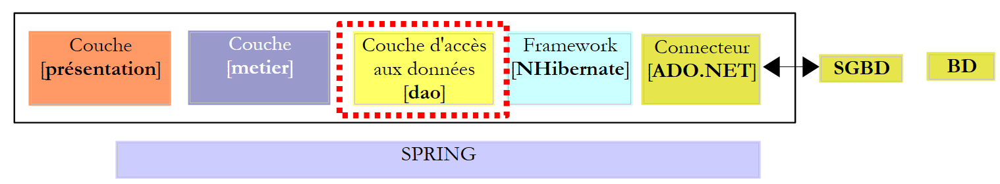
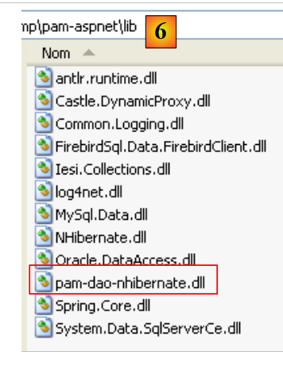
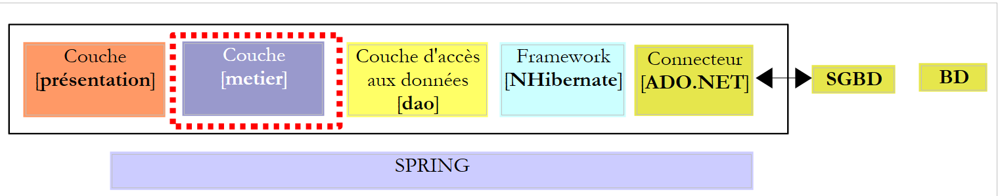
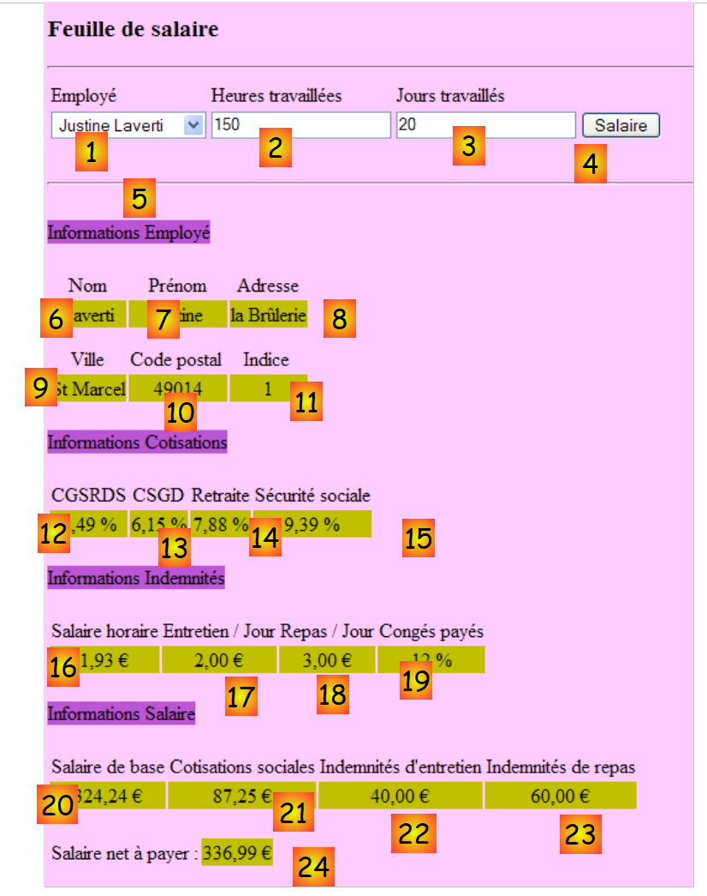
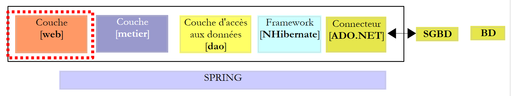

7. L'application [SimuPaie] – version 3 – architecture 3 couches avec NHibernate
Lectures conseillées : "Langage C# 2008, Chapitre 4 : Architectures 3 couches, tests NUnit, framework Spring".
7.1. Architecture générale de l'application
L'application [SimuPaie] aura maintenant la structure à trois couches suivante :
 |
- la couche [1-dao] (dao=Data Access Object) s'occupera de l'accès aux données.
- la couche [2-métier] s'occupera de l'aspect métier de l'application, le calcul de la paie.
- la couche [3-ui] (ui=User Interface) s'occupera de la présentation des données à l'utilisateur et de l'exécution de ses requêtes. Nous appelons [Application] l'ensemble des modules assurant cette fonction. Elle est l'interlocuteur de l'utilisateur.
- les trois couches seront rendues indépendantes grâce à l'utilisation d'interfaces .NET
- l'intégration des différentes couches sera réalisée par Spring IoC
Le traitement d'une demande d'un client se déroule selon les étapes suivantes :
- le client fait une demande à l'application.
- l'application traite cette demande. Pour ce faire, elle peut avoir besoin de l'aide de la couche [métier] qui elle-même peut avoir besoin de la couche [dao] si des données doivent être échangées avec la base de données.
- l'application reçoit une réponse de la couche [métier]. Selon celle-ci, elle envoie la vue (= la réponse) appropriée au client.
Prenons l'exemple du calcul de la paie d'une assistante maternelle. Celui-ci va nécessiter plusieurs étapes :
 |
- la couche [ui] va devoir demander à l'utilisateur
- l'identité de la personne dont on veut faire la paie
- le nombre de jours travaillés de celle-ci
- le nombre d'heures travaillées
- Pour cela elle va devoir présenter à celui-ci la liste des personnes (nom, prénom, SS) présentes dans la table [EMPLOYES] afin que l'utilisateur choisisse l'une d'elles. La couche [ui] va utiliser le chemin [2, 3, 4, 5, 6, 7] pour les obtenir. L'opération [2] est la demande de la liste des employés, l'opération [7] la réponse à cette demande. Ceci fait, la couche [ui] peut présenter la liste des employés à l'utilisateur par [8].
- l'utilisateur va transmettre à la couche [ui] le nombre de jours travaillés ainsi que le nombre d'heures travaillées. C'est l'opération [1] ci-dessus. Au cours de cette étape, l'utilisateur n'interagit qu'avec la couche [ui]. C'est celle-ci qui va notamment vérifier la validité des données saisies. Ceci fait, l'utilisateur va demander le calcul de la paie.
- la couche [ui] va demander à la couche métier de faire ce calcul. Pour cela elle va lui transmettre les données qu'elle a reçues de l'utilisateur. C'est l'opération [2].
la couche [metier] a besoin de certaines informations pour mener à bien son travail :- des informations plus complètes sur la personne (adresse, indice, ...)
- les indemnités liées à son indice
- les taux des différentes cotisations sociales à prélever sur le salaire brut
Elle va demander ces informations à la couche [dao] avec le chemin [3, 4, 5, 6]. [3] est la demande initiale et [6] la réponse à cette demande.
- ayant toutes les données dont elle avait besoin, la couche [metier] calcule la paie de la personne choisie par l'utilisateur.
- la couche [metier] peut maintenant répondre à la demande de la couche [ui] faite en (d). C'est le chemin [7].
- la couche [ui] va mettre en forme ces résultats pour les présenter à l'utilisateur sous une forme appropriée puis les présenter. C'est le chemin [8].
- on peut imaginer que ces résultats doivent être mémorisés dans un fichier ou une base de données. Cela peut être fait de façon automatique. Dans ce cas, après l'opération (f), la couche [metier] va demander à la couche [dao] d'enregistrer les résultats. Ce sera le chemin [3, 4, 5, 6]. Cela peut être fait également sur demande de l'utilisateur. Ce sera le chemin [1-8] qui sera utilisé par le cycle demande - réponse.
On voit dans cette description qu'une couche est amenée à utiliser les ressources de la couche qui est à sa droite, jamais de celle qui est à sa gauche.
Notre première implémentation de cette architecture 3 couches sera une application ASP.NET où
- les couches [dao] et [metier] seront implémentées par des DLL
- la couche [ui] sera implémentée par le formulaire web de la version 1 (cf paragraphe 4.2.1).
Nous commençons par implémenter la couche [dao] avec le framework NHibernate.
7.2. La couche [dao] d'accès aux données
 |
7.2.1. Le projet Visual Studio C# de la couche [dao]
Le projet Visual Studio de la couche [dao] est le suivant :
 |
- en [1], le projet dans sa globalité
- en [2], les différentes classes du projet
- en [3], les références du projet.
- en [4], un dossier [lib] dans lequel ont été réunies les DLL nécessaires aux différents projets qui vont suivre
Dans les références [3] du projet, on trouve les DLL suivantes :
- NHibernate : pour l'ORM NHibernate
- MySql.Data : le pilote ADO.NET du SGBD MySQL
- Spring.Core : pour le framework Spring
- log4net : une bibliothèque de logs
- nunit.framework : une bibliothèque de tests unitaires
Ces références ont été prises dans le dosssier [lib] [4]. On prendra soin que toutes ces références aient leur propriété "Copie locale" à "True" [5] :
 |
7.2.2. Les entités de la couche [dao]
 |
Les entités (objets) nécessaires à la couche [dao] ont été rassemblées dans le dossier [entites] du projet. Certaines nous sont déjà connues : [Cotisations] décrite paragraphe 6.3.2.1, [Employe] décrite paragraphe 6.3.2.3, [Indemnites] décrite paragraphe 6.3.2.2. Elles sont toutes dans l'espace de noms [Pam.Dao.Entites].
La classe [Employe] évolue de la façon suivante :
namespace Pam.Dao.Entites {
public class Employe {
// propriétés automatiques
public virtual int Id { get; set; }
public virtual int Version { get; set; }
public virtual string SS { get; set; }
public virtual string Nom { get; set; }
public virtual string Prenom { get; set; }
public virtual string Adresse { get; set; }
public virtual string Ville { get; set; }
public virtual string CodePostal { get; set; }
public virtual Indemnites Indemnites { get; set; }
// constructeurs
public Employe() {
}
// ToString
public override string ToString() {
return string.Format("[{0},{1},{2},{3},{4},{5},{6}]", SS, Nom, Prenom, Adresse, Ville, CodePostal, Indemnites);
}
}
}
7.2.3. La classe [PamException]
La couche [dao] est chargée d 'échanger des données avec une source extérieure. Cet échange peut échouer. Par exemple, si les informations sont demandées à un service distant sur Internet, leur obtention échouera sur une panne quelconque du réseau. Sur ce type d'erreurs, il est classique en Java de lancer une exception. Si l'exception n'est pas de type [RunTimeException] ou dérivé, il faut indiquer dans la signature de la méthode que celle-ci lance (throws) une exception. En .NET, toutes les exceptions sont non contrôlées, c.a.d. équivalentes au type [RunTimeException] de Java. Il n'y a alors pas lieu de déclarer que les méthodes [GetAllIdentitesEmployes, GetEmploye, GetCotisations] sont susceptibles de lancer une exception.
Il est cependant intéressant de pouvoir différencier les exceptions les unes des autres car leur traitement peut différer. Ainsi le code gérant divers types d'exceptions peut être écrit de la façon suivante :
try{
... code pouvant générer divers types d'exceptions
}catch (Exception1 ex1){
...on gère un type d'exceptions
}catch (Exception2 ex2){
...on gère un autre type d'exceptions
}finally{
...
}
Nous créons donc un type d'exceptions pour la couche [dao] de notre application. C'est le type [PamException] suivant :
using System;
namespace Pam.Dao.Entites {
public class PamException : Exception {
// le code de l'erreur
public int Code { get; set; }
// constructeurs
public PamException() {
}
public PamException(int Code)
: base() {
this.Code = Code;
}
public PamException(string message, int Code)
: base(message) {
this.Code = Code;
}
public PamException(string message, Exception ex, int Code)
: base(message, ex) {
this.Code = Code;
}
}
}
- ligne 2 : la classe appartient à l'espace de noms [Pam.Dao.Entites]
- ligne 4 : la classe dérive de la classe [Exception]
- ligne 7 : elle a une propriété publique [Code] qui est un code d'erreur
- nous utiliserons dans notre couche [dao] deux sortes de constructeur :
- celui des lignes 18-21 qu'on peut utiliser comme montré ci-dessous :
- (suite)
- ou celui des lignes 23-26 destiné à faire remonter une exception déjà survenue en l'encapsulant dans une exception de type [PamException] :
try{
....
}catch (IOException ex){
// on encapsule l'exception
throw new PamException("Problème d'accès aux données",ex,10);
}
Cette seconde méthode a l'avantage de ne pas perdre l'information que peut contenir la première exception.
7.2.4. Les fichiers de mapping tables <--> classes de NHibernate
Revenons à l'architecture de l'application :
 |
En lecture, le framework NHibernate exploite des données de la base de données et les transforme en objets dont nous venons de présenter les classes. En écriture, il fait l'inverse : à partir d'objets, il crée, met à jour, supprime des lignes dans les tables de la base de données. Les fichiers assurant la transformation tables <--> classes ont déjà été présentés :
|
- le fichier [Cotisations.hbm.xml] présenté paragraphe 6.3.2.1 fait la correspondance entre la table [COTISATIONS] et la classe [Cotisations]
<?xml version="1.0" encoding="utf-8" ?>
<hibernate-mapping xmlns="urn:nhibernate-mapping-2.2"
namespace="Pam.Dao.Entites" assembly="pam-dao-nhibernate">
<class name="Cotisations" table="COTISATIONS">
<id name="Id" column="ID">
<generator class="native" />
</id>
<version name="Version" column="VERSION"/>
<property name="CsgRds" column="CSGRDS" not-null="true"/>
<property name="Csgd" column="CSGD" not-null="true"/>
<property name="Retraite" column="RETRAITE" not-null="true"/>
<property name="Secu" column="SECU" not-null="true"/>
</class>
</hibernate-mapping>
- le fichier [Employe.hbm.xml] présenté paragraphe 6.3.2.3 fait la correspondance entre la table [EMPLOYES] et la classe [Employe]
<?xml version="1.0" encoding="utf-8" ?>
<hibernate-mapping xmlns="urn:nhibernate-mapping-2.2"
namespace="Pam.Dao.Entites" assembly="pam-dao-nhibernate">
<class name="Employe" table="EMPLOYES">
<id name="Id" column="ID">
<generator class="native" />
</id>
<version name="Version" column="VERSION"/>
<property name="SS" column="SS" length="15" not-null="true" unique="true"/>
<property name="Nom" column="NOM" length="30" not-null="true"/>
<property name="Prenom" column="PRENOM" length="20" not-null="true"/>
<property name="Adresse" column="ADRESSE" length="50" not-null="true" />
<property name="Ville" column="VILLE" length="30" not-null="true"/>
<property name="CodePostal" column="CP" length="5" not-null="true"/>
<many-to-one name="Indemnites" column="INDEMNITE_ID" cascade="save-update" lazy="false"/>
</class>
</hibernate-mapping>
- le fichier [Indemnites.hbm.xml] présenté paragraphe 6.3.2.2 fait la correspondance entre la table [INDEMNITES] et la classe [Indemnites]
<?xml version="1.0" encoding="utf-8" ?>
<hibernate-mapping xmlns="urn:nhibernate-mapping-2.2"
namespace="Pam.Dao.Entites" assembly="pam-dao-nhibernate">
<class name="Indemnites" table="INDEMNITES">
<id name="Id" column="ID">
<generator class="native" />
</id>
<version name="Version" column="VERSION"/>
<property name="Indice" column="INDICE" not-null="true" unique="true"/>
<property name="BaseHeure" column="BASE_HEURE" not-null="true"/>
<property name="EntretienJour" column="ENTRETIEN_JOUR" not-null="true"/>
<property name="RepasJour" column="REPAS_JOUR" not-null="true" />
<property name="IndemnitesCp" column="INDEMNITES_CP" not-null="true"/>
</class>
</hibernate-mapping>
On notera que dans la balise <hibernate-mapping> de ces fichiers (ligne 2), on a les attributs suivants :
- namespace : Pam.Dao.Entites. Les classes [Cotisations], [Employe] et [Indemnites] doivent se trouver dans cet espace de noms.
- assembly : pam-dao-nhibernate. Les fichiers de mapping [*.hbm.xml] doivent être encapsulés dans une DLL nommée [pam-dao-nhibernate]. Pour obtenir ce résultat, le projet C# est configuré comme suit :
 |
- en [1], l'assembly du projet a pour nom [pam-dao-nhibernate]
- en [2], les fichiers de mapping [*.hbm.xml] sont intégrés [3] à l'assembly du projet
7.2.5. L'interface [IPamDao] de la couche [dao]
Revenons à l'architecture de notre application :
 |
Dans les cas simples, on peut partir de la couche [metier] pour découvrir les interfaces de l'application. Pour travailler, elle a besoin de données :
- déjà disponibles dans des fichiers, bases de données ou via le réseau. Elles sont fournies par la couche [dao].
- pas encore disponibles. Elles sont alors fournies par la couche [ui] qui les obtient auprès de l'utilisateur de l'application.
Quelle interface doit offrir la couche [dao] à la couche [metier] ? Quelles sont les interactions possibles entre ces deux couches ? La couche [dao] doit fournir les données suivantes à la couche [metier] :
- la liste des assistantes maternelles afin de permettre à l'utilisateur d'en choisir une en particulier
- des informations complètes sur la personne choisie (adresse, indice, ...)
- les indemnités liées à l'indice de la personne
- les taux des différentes cotisations sociales
Ces informations sont en effet connues avant le calcul de la paie et peuvent donc être mémorisées. Dans le sens [metier] -> [dao], la couche [metier] peut demander à la couche [dao] d'enregistrer le résultat du calcul de la paie. Nous ne le ferons pas ici.
Avec ces informations, on pourrait tenter une première définition de l'interface de la couche [dao] :
using Pam.Dao.Entites;
namespace Pam.Dao.Service {
public interface IPamDao {
// liste de toutes les identités des employés
Employe[] GetAllIdentitesEmployes();
// un employé particulier avec ses indemnités
Employe GetEmploye(string ss);
// liste de toutes les cotisations
Cotisations GetCotisations();
}
}
- ligne 1 : on importe l'espace de noms des entités de la couche [dao].
- ligne 3 : la couche [dao] est dans l'espace de noms [Pam.Dao.Service]. Les éléments de l'espace de noms [Pam.Dao.Entites] peuvent être créés en plusieurs exemplaires. Les éléments de l'espace de noms [Pam.Dao.Service] sont créés en un unique exemplaire (singleton). C'est ce qui a justifié le choix des noms des espaces de noms.
- ligne 4 : l'interface s'appelle [IPamDao]. Elle définit trois méthodes :
- ligne 6, [GetAllIdentitesEmployes] rend un tableau d'objets de type [Employe] qui représente la liste des assistantes maternelles sous une forme simplifiée (nom, prénom, SS).
- ligne 8, [GetEmploye] rend un objet [Employe] : l'employé qui a le n° de sécurité sociale passé en paramètre à la méthode avec les indemnités liées à son indice.
- ligne 10, [GetCotisations] rend l'objet [Cotisations] qui encapsule les taux des différentes cotisations sociales à prélever sur le salaire brut.
7.3. Implémentation et tests de la couche [dao]
7.3.1. Le projet Visual Studio
Le projet Visual Studio a déjà été présenté. Rappelons-le :
 |
- en [1], le projet dans sa globalité
- en [2], les différentes classes du projet. Le dossier [entites] contient les entités manipulées par la couche [dao] ainsi que les fichiers de mapping NHibernate. Le dossier [service] contient l'interface [IPamDao] et son implémentation [PamDaoNHibernate]. Le dossier [tests] contient un test console [Main.cs] et un test unitaire [NUnit.cs].
- en [3], les références du projet.
7.3.2. Le programme de test console [Main.cs]
Le programme de test [Main.cs] est exécuté dans l'architecture suivante :
 |
Il est chargé de tester les méthodes de l'interface [IPamDao]. Un exemple basique pourrait être le suivant :
using System;
using Pam.Dao.Entites;
using Pam.Dao.Service;
using Spring.Context.Support;
namespace Pam.Dao.Tests {
public class MainPamDaoTests {
public static void Main() {
try {
// instanciation couche [dao]
IPamDao pamDao = (IPamDao)ContextRegistry.GetContext().GetObject("pamdao");
// liste des identités des employés
foreach (Employe Employe in pamDao.GetAllIdentitesEmployes()) {
Console.WriteLine(Employe.ToString());
}
// un employé avec ses indemnités
Console.WriteLine("------------------------------------");
Console.WriteLine(pamDao.GetEmploye("254104940426058"));
Console.WriteLine("------------------------------------");
// liste des cotisations
Cotisations cotisations = pamDao.GetCotisations();
Console.WriteLine(cotisations.ToString());
} catch (Exception ex) {
// affichage exception
Console.WriteLine(ex.ToString());
}
//pause
Console.ReadLine();
}
}
}
- ligne 11 : on demande à Spring une référence sur la couche [dao].
- lignes 13-15 : test de la méthode [GetAllIdentitesEmployes] de l'interface [IPamDao]
- ligne 18 : test de la méthode [GetEmploye] de l'interface [IPamDao]
- ligne 21 : test de la méthode [GetCotisations] de l'interface [IPamDao]
Spring, NHibernate et log4net sont configurés par le fichier [App.config] suivant :
<?xml version="1.0" encoding="utf-8" ?>
<configuration>
<!-- sections de configuration -->
<configSections>
<section name="log4net" type="log4net.Config.Log4NetConfigurationSectionHandler,log4net" />
<sectionGroup name="spring">
<section name="objects" type="Spring.Context.Support.DefaultSectionHandler, Spring.Core" />
<section name="context" type="Spring.Context.Support.ContextHandler, Spring.Core" />
</sectionGroup>
<section name="hibernate-configuration" type="NHibernate.Cfg.ConfigurationSectionHandler, NHibernate" />
</configSections>
<!-- configuration Spring -->
<spring>
<context>
<resource uri="config://spring/objects" />
</context>
<objects xmlns="http://www.springframework.net">
<object id="pamdao" type="Pam.Dao.Service.PamDaoNHibernate, pam-dao-nhibernate" init-method="init" destroy-method="destroy"/>
</objects>
</spring>
<!-- configuration NHibernate -->
<hibernate-configuration xmlns="urn:nhibernate-configuration-2.2">
<session-factory>
<property name="connection.provider">NHibernate.Connection.DriverConnectionProvider</property>
<property name="connection.driver_class">NHibernate.Driver.MySqlDataDriver</property>
<property name="dialect">NHibernate.Dialect.MySQLDialect</property>
<property name="connection.connection_string">
Server=localhost;Database=dbpam_nhibernate;Uid=root;Pwd=;
</property>
<property name="show_sql">false</property>
<mapping assembly="pam-dao-nhibernate"/>
</session-factory>
</hibernate-configuration>
<!-- This section contains the log4net configuration settings -->
<!-- NOTE IMPORTANTE : les logs ne sont pas actifs par défaut. Il faut les activer par programme
avec l'instruction log4net.Config.XmlConfigurator.Configure();
! -->
<log4net>
...
</log4net>
</configuration>
La configuration de NHibernate (ligne 10, lignes 25-36) a été expliquée paragrpahe 6.3.1. On notera la ligne 34 qui indique que les fichiers de mapping se trouvent dans l'assembly [pam-dao-nhibernate]. C'est l'assembly du projet.
La configuration de Spring est faite aux lignes 6-9, 15-22. La ligne 20 définit l'objet [pamdao] utilisé par le programme console [Main.cs]. La balise <object> a ici les attributs suivants :
- type : fixe la classe à instancier. C'est la classe [PamDaoNHibernate] qui implémente l'interface [IPamDao]. Elle sera trouvée dans la DLL [pam-dao-nhibernate] du projet.
- init-method : la méthode de la classe [PamDaoNHibernate] à exécuter après instanciation de la classe
- destroy-method : la méthode de la classe [PamDaoNHibernate] à exécuter lorsque le conteneur Spring est détruit à la fin de l'exécution du projet.
L'exécution faite avec la base de données décrite au paragraphe 6.2 donne le résultat console suivant :
- lignes 1-2 : les 2 employés de type [Employe] avec les seules informations [SS, Nom, Prenom]
- ligne 4 : l'employé de type [Employe] ayant le n° de sécurité sociale [254104940426058]
- ligne 5 : les taux de cotisations
7.3.3. Écriture de la classe [PamDaoNHibernate]
 |
L'interface [IPamDao] implémentée par la couche [dao] est la suivante :
using Pam.Dao.Entites;
namespace Pam.Dao.Service {
public interface IPamDao {
// liste de toutes les identités des employés
Employe[] GetAllIdentitesEmployes();
// un employé particulier avec ses indemnités
Employe GetEmploye(string ss);
// liste de toutes les cotisations
Cotisations GetCotisations();
}
}
Question : écrire le code de la classe [PamDaoNHibernate] implémentant l'interface [IPamDao] ci-dessus à l'aide du framework NHibernate configuré tel qu'il a été présenté précédemment. On implémentera également les méthodes init et destroy exécutées par Spring. La méthode init créera la SessionFactory auprès de laquelle on obtiendra des objets Session. La méthode destroy fermera cette SessionFactory. On s'aidera des exemples du paragraphe 6.5.
Contraintes :
On supposera que certaines données demandées à la couche [dao] peuvent entièrement tenir en mémoire. Ainsi, pour améliorer les performances, la classe [PamDaoNHibernate] mémorisera :
- la table [EMPLOYES] sous la forme (SS, NOM, PRENOM) nécessitée par la méthode [GetAllIdentitesEmployes] sous la forme d'un tableau d'objets de type [Employe]
- la table [COTISATIONS] sous la forme d'un unique objet de type [Cotisations]
Cela sera fait dans la méthode [init] de la classe. Le squelette de la classe [PamDaoNHibernate] pourrait être le suivant :
using System;
...
namespace Pam.Dao.Service {
class PamDaoNHibernate : IPamDao {
// champs privés
private Cotisations cotisations;
private Employe[] employes;
private ISessionFactory sessionFactory = null;
// init
public void init() {
try {
// initialisation factory
sessionFactory = new Configuration().Configure().BuildSessionFactory();
// on récupère les taux de cotisations et les employés pour les mettre en cache
.......................
}
// fermeture SessionFactory
public void destroy() {
if (sessionFactory != null) {
sessionFactory.Close();
}
}
// liste de toutes les identités des employés
public Employe[] GetAllIdentitesEmployes() {
return employes;
}
// un employé particulier avec ses indemnités
public Employe GetEmploye(string ss) {
................................
}
// liste des cotisations
public Cotisations GetCotisations() {
return cotisations;
}
}
}
7.3.4. Tests unitaires avec NUnit
Lectures conseillées : "Langage C# 2008, Chapitre 4 : Architectures 3 couches, tests NUnit, framework Spring".
Le test précédent avait été visuel : on vérifiait à l'écran qu'on obtenait bien les résultats attendus. C'est une méthode insuffisante en milieu professionnel. Les tests doivent toujours être automatisés au maximum et viser à ne nécessiter aucune intervention humaine. L'être humain est en effet sujet à la fatigue et sa capacité à vérifier des tests s'émousse au fil de la journée. L'outil [NUnit] aide à réaliser cette automatisation. Il est disponible à l'URL [http://www.nunit.org/].
Le projet Visual Studio de la couche [dao] va évoluer de la façon suivante :
 |
- en [1], le programme de test [NUnit.cs]
- en [2,3], le projet va générer une DLL nommé [pam-dao-nhibernate.dll]
- en [4], la référence à la DLL du framework NUnit : [nunit.framework.dll]
- en [5], la classe [Main.cs] ne sera pas incluse dans la DLL [pam-dao-nhibernate]
- en [6], la classe [NUnit.cs] sera incluse dans la DLL [pam-dao-nhibernate]
La classe de test NUnit est la suivante :
using System.Collections;
using NUnit.Framework;
using Pam.Dao.Service;
using Pam.Dao.Entites;
using Spring.Objects.Factory.Xml;
using Spring.Core.IO;
using Spring.Context.Support;
namespace Pam.Dao.Tests {
[TestFixture]
public class NunitPamDao : AssertionHelper {
// la couche [dao] à tester
private IPamDao pamDao = null;
// constructeur
public NunitPamDao() {
// instanciation couche [dao]
pamDao = (IPamDao)ContextRegistry.GetContext().GetObject("pamdao");
}
// init
[SetUp]
public void Init() {
}
[Test]
public void GetAllIdentitesEmployes() {
// vérification nbre d'employes
Expect(2, EqualTo(pamDao.GetAllIdentitesEmployes().Length));
}
[Test]
public void GetCotisations() {
// vérification taux de cotisations
Cotisations cotisations = pamDao.GetCotisations();
Expect(3.49, EqualTo(cotisations.CsgRds).Within(1E-06));
Expect(6.15, EqualTo(cotisations.Csgd).Within(1E-06));
Expect(9.39, EqualTo(cotisations.Secu).Within(1E-06));
Expect(7.88, EqualTo(cotisations.Retraite).Within(1E-06));
}
[Test]
public void GetEmployeIdemnites() {
// vérification individus
Employe employe1 = pamDao.GetEmploye("254104940426058");
Employe employe2 = pamDao.GetEmploye("260124402111742");
Expect("Jouveinal", EqualTo(employe1.Nom));
Expect(2.1, EqualTo(employe1.Indemnites.BaseHeure).Within(1E-06));
Expect("Laverti", EqualTo(employe2.Nom));
Expect(1.93, EqualTo(employe2.Indemnites.BaseHeure).Within(1E-06));
}
[Test]
public void GetEmployeIdemnites2() {
// vérification individu inexistant
bool erreur = false;
try {
Employe employe1 = pamDao.GetEmploye("xx");
} catch {
erreur = true;
}
Expect(erreur, True);
}
}
}
- ligne 11 : la classe a l'attribut [TestFixture] qui en fait une classe de test [NUnit].
- ligne 12 : la classe dérive de la classe utilitaire AssertionHelper du framework NUnit (à partir de la version 2.4.6).
- ligne 14 : le champ privé [pamDao] est une instance de l'interface d'accès à la couche [dao]. On notera que le type de ce champ est une interface et non une classe. Cela signifie que l'instance [pamDao] ne rend accessibles que des méthodes, celles de l'interface [IPamDao].
- les méthodes testées dans la classe sont celles ayant l'attribut [Test]. Pour toutes ces méthodes, le processus de test est le suivant :
- la méthode ayant l'attribut [SetUp] est tout d'abord exécutée. Elle sert à préparer les ressources (connexions réseau, connexions aux bases de données, ...) nécessaires au test.
- puis la méthode à tester est exécutée
- et enfin la méthode ayant l'attribut [TearDown] est exécutée. Elle sert généralement à libérer les ressources mobilisées par la méthode d'attribut [SetUp].
- dans notre test, il n'y a pas de ressources à allouer avant chaque test et à désallouer ensuite. Aussi n'avons-nous pas besoin de méthode avec les attributs [SetUp] et [TearDown]. Pour l'exemple, nous avons présenté, lignes 23-26, une méthode avec l'attribut [SetUp].
- lignes 17-20 : le constructeur de la classe initialise le champ privé [pamDao] à l'aide de Spring et [App.config].
- lignes 29-32 : testent la méthode [GetAllIdentitesEmployes]
- lignes 35-42 : testent la méthode [GetCotisations]
- lignes 45-53 : testent la méthode [GetEmploye]
- lignes 56-65 : testent la méthode [GetEmploye] lors d'une exception.
La génération du projet crée la DLL [pam-dao-nhibernate.dll] dans le dossier [bin/Release].
 |
Le dossier [bin/Release] contient en outre :
- les DLL qui font partie des références du projet et qui ont l'attribut [Copie locale] à vrai : [Spring.Core, MySql.data, NHibernate, log4net]. Ces DLL sont accompagnées des copies des DLL qu'elles utilisent elles-mêmes :
- [CastleDynamicProxy, Iesi.Collections] pour l'outil NHibernate
- [antlr.runtime, Common.Logging] pour l'outil Spring
- le fichier [pam-dao-nhibernate.dll.config] est une copie du fichier de configuration [App.config]. C'est VS qui opère cette duplication. A l'exécution c'est le fichier [pam-dao-nhibernate.dll.config] qui est utilisé et non [App.config].
On charge la DLL [pam-dao-nhibernate.dll] avec l'outil [NUnit-Gui], version 2.4.6 et on exécute les tests :

Ci-dessus, les tests ont été réussis.
Travail pratique :
mettre en oeuvre sur machine les tests de la classe [PamDaoNHibernate].- utiliser différents fichiers de configuration [App.config] afin d'utiliser des SGBD différents (Firebird, MySQL, Postgres, SQL Server)
7.3.5. Génération de la DLL de la couche [dao]
Une fois écrite et testée la classe [PamDaoNHibernate], on génèrera la DLL de la couche [dao] de la façon suivante :
 |
- [1], les programmes de test sont exlus de l'assembly du projet
- [2,3], configuration du projet
- [4], génération du projet
- la DLL est générée dans le dossier [bin/Release] [5]. Nous l'ajoutons aux DLL déjà présentes dans le dossier [lib] [6] :
 |
7.4. La couche métier
Revenons sur l'architecture générale de l'application [SimuPaie] :
 |
Nous considérons désormais que la couche [dao] est acquise et qu'elle a été encapsulée dans la DLL [pam-dao-nhibernate.dll]. Nous nous intéressons maintenant à la couche [metier]. C'est elle qui implémente les règles métier, ici les règles de calcul d'un salaire.
7.4.1. Le projet Visual Studio de la couche [metier]
Le projet Visual Studio de la couche métier pourrait ressembler à ce qui suit :
 |
- en [1] l'ensemble du projet configuré par le fichier [App.config]
- en [2], la couche [metier] est formée des deux dossiers [entites, service]. Le dossier [tests] contient un programme de test console (Main.cs) et un programme de test NUnit (NUnit.cs).
- en [3] les références utilisées par le projet. On notera la DLL [pam-dao-nhibernate] de la couche [dao] étudiée précédemment.
7.4.2. L'interface [IPamMetier] de la couche [metier]
Revenons à l'architecture générale de l'application :
 |
Quelle interface doit offrir la couche [metier] à la couche [ui] ? Quelles sont les interactions possibles entre ces deux couches ? Rappelons-nous l'interface web qui sera présentée à l'utilisateur :
 |
- à l'affichage initial du formulaire, on doit trouver en [1] la liste des employés. Une liste simplifiée suffit (Nom, Prénom, SS). Le n° SS est nécessaire pour avoir accès aux informations complémentaires sur l'employé sélectionné (informations 6 à 11).
- les informations 12 à 15 sont les différents taux de cotisations.
- les informations 16 à 19 sont les indemnités liées à l'indice de l'employé
- les informations 20 à 24 sont les éléments du salaire calculés à partir des saisies 1 à 3 faites par l'utilisateur.
L'interface [IPamMetier] offerte à la couche [ui] par la couche [metier] doit répondre aux exigences ci-dessus. Il existe de nombreuses interfaces possibles. Nous proposons la suivante :
using Pam.Dao.Entites;
using Pam.Metier.Entites;
namespace Pam.Metier.Service {
public interface IPamMetier {
// liste de toutes les identités des employés
Employe[] GetAllIdentitesEmployes();
// ------- le calcul du salaire
FeuilleSalaire GetSalaire(string ss, double heuresTravaillées, int joursTravaillés);
}
}
- ligne 7 : la méthode qui permettra le remplissage du combo [1]
- ligne 10 : la méthode qui permettra d'obtenir les renseignements 6 à 24. Ceux-ci ont été rassemblés dans un objet de type [FeuilleSalaire].
7.4.3. Les entités de la couche [metier]
Le dossier [entites] du projet Visual Studio contient les objets manipulés par la classe métier : [FeuilleSalaire] et [ElementsSalaire].
 |
La classe [FeuilleSalaire] encapsule les informations 6 à 24 du formulaire précédent :
using Pam.Dao.Entites;
namespace Pam.Metier.Entites {
public class FeuilleSalaire {
// propriétés automatiques
public Employe Employe { get; set; }
public Cotisations Cotisations { get; set; }
public ElementsSalaire ElementsSalaire { get; set; }
// ToString
public override string ToString() {
return string.Format("[{0},{1},{2}", Employe, Cotisations, ElementsSalaire);
}
}
}
- ligne 8 : les informations 6 à 11 sur l'employé dont on calcule le salaire et les informations 16 à 19 sur ses indemnités. Il ne faut pas oublier ici qu'un objet [Employe] encapsule un objet [Indemnites] représentant les indemnités de l'employé.
- ligne 9 : les informations 12 à 15
- ligne 10 : les informations 20 à 24
- lignes 13-15 : la méthode [ToString]
La classe [ElementsSalaire] encapsule les informations 20 à 24 du formulaire :
namespace Pam.Metier.Entites {
public class ElementsSalaire {
// propriétés automatiques
public double SalaireBase { get; set; }
public double CotisationsSociales { get; set; }
public double IndemnitesEntretien { get; set; }
public double IndemnitesRepas { get; set; }
public double SalaireNet { get; set; }
// ToString
public override string ToString() {
return string.Format("[{0} : {1} : {2} : {3} : {4} ]", SalaireBase, CotisationsSociales, IndemnitesEntretien, IndemnitesRepas, SalaireNet);
}
}
}
- lignes 4-8 : les éléments du salaire tels qu'expliqués dans les règles métier décrites paragraphe 3.2.
- ligne 4 : le salaire de base de l'employé, fonction du nombre d'heures travaillées
- ligne 5 : les cotisations prélevées sur ce salaire de base
- lignes 6 et 7 : les indemnités à ajouter au salaire de base, fonction de l'indice de l'employé et du nombre de jours travaillés
- ligne 8 : le salaire net à payer
- lignes 12-15 : la méthode [ToString] de la classe.
7.4.4. Implémentation de la couche [metier]
 |
Nous allons implémenter l'interface [IPamMetier] avec deux classes :
- [AbstractBasePamMetier] qui est une classe abstraite dans laquelle on implémentera l'accès aux données de l'interface [IPamMetier]. Cette classe aura une référence sur la couche [dao].
- [PamMetier] une classe dérivée de [AbstractBasePamMetier] qui elle, implémentera les règles métier de l'interface [IPamMetier]. Elle sera ignorante de la couche [dao].
La classe [AbstractBasePamMetier] sera la suivante :
using Pam.Dao.Entites;
using Pam.Dao.Service;
using Pam.Metier.Entites;
namespace Pam.Metier.Service {
public abstract class AbstractBasePamMetier : IPamMetier {
// l'objet d'accès aux données
public IPamDao PamDao { get; set; }
// liste de toutes les identités des employés
public Employe[] GetAllIdentitesEmployes() {
return PamDao.GetAllIdentitesEmployes();
}
// un employé particulier avec ses indemnités
protected Employe GetEmploye(string ss) {
return PamDao.GetEmploye(ss);
}
// les cotisations
protected Cotisations GetCotisations() {
return PamDao.GetCotisations();
}
// le calcul du salaire
public abstract FeuilleSalaire GetSalaire(string ss, double heuresTravaillées, int joursTravaillés);
}
}
- ligne 5 : la classe appartient à l'espace de noms [Pam.Metier.Service] comme toutes les classes et interfaces de la couche [metier].
- ligne 6 : la classe est abstraite (attribut abstract) et implémente l'interface [IPamMetier]
- ligne 9 : la classe détient une référence sur la couche [dao] sous la forme d'une propriété publique
- lignes 12-14 : implémentation de la méthode [GetAllIdentitesEmployes] de l'interface [IPamMetier] – utilise la méthode de même nom de la couche [dao]
- lignes 17-19 : méthode interne (protected) [GetEmploye] qui fait appel à la méthode de même nom de la couche [dao] – déclarée protected pour que les classes dérivées puissent y avoir accès sans qu'elle soit publique.
- lignes 22-24 : méthode interne (protected) [GetCotisations] qui fait appel à la méthode de même nom de la couche [dao]
- ligne 27 : implémentation abstraite (attribut abstract) de la méthode [GetSalaire] de l'interface [IPamMetier].
Le calcul du salaire est implémenté par la classe [PamMetier] suivante :
using System;
using Pam.Dao.Entites;
using Pam.Metier.Entites;
namespace Pam.Metier.Service {
public class PamMetier : AbstractBasePamMetier {
// calcul du salaire
public override FeuilleSalaire GetSalaire(string ss, double heuresTravaillées, int joursTravaillés) {
// SS : n° SS de l'employé
// HeuresTravaillées : le nombre d'heures travaillés
// Jours Travaillés : nbre de jours travaillés
// on récupère l'employé avec ses indemnités
...
// on récupère les divers taux de cotisation
...
// on calcule les éléments du salaire
...
// on rend la feuille de salaire
return ...;
}
}
}
- ligne 7 : la classe dérive de [AbstractBasePamMetier] et donc implémente de ce fait l'interface [IPamMetier]
- ligne 10 : la méthode [GetSalaire] à implémenter
Question : écrire le code de la méthode [GetSalaire].
7.4.5. Le test console de la couche [metier]
Rappelons le projet Visual Studio de la couche [metier] :
 |
Le programme de test [Main] ci-dessus teste les méthodes de l'interface [IPamMetier]. Un exemple basique pourrait être le suivant :
using System;
using Pam.Dao.Entites;
using Pam.Metier.Service;
using Spring.Context.Support;
namespace Pam.Metier.Tests {
class MainPamMetierTests {
public static void Main() {
try {
// instanciation couche [metier]
IPamMetier pamMetier = ContextRegistry.GetContext().GetObject("pammetier") as IPamMetier;
// calculs de feuilles de salaire
Console.WriteLine(pamMetier.GetSalaire("260124402111742", 30, 5));
Console.WriteLine(pamMetier.GetSalaire("254104940426058", 150, 20));
try {
Console.WriteLine(pamMetier.GetSalaire("xx", 150, 20));
} catch (PamException ex) {
Console.WriteLine(string.Format("PamException : {0}", ex.Message));
}
} catch (Exception ex) {
Console.WriteLine(string.Format("Exception : {0}", ex.ToString()));
}
// pause
Console.ReadLine();
}
}
}
- ligne 11 : instanciation par Spring de la couche [metier].
- lignes 13-14 : tests de la méthode [GetSalaire] de l'interface [IPamMetier]
- lignes 15-22 : test de la méthode [GetSalaire] lorsqu'il se produit une exception
Le programme de test utilise le fichier de configuration [App.config] suivant :
<?xml version="1.0" encoding="utf-8" ?>
<configuration>
<!-- sections de configuration -->
<configSections>
<section name="log4net" type="log4net.Config.Log4NetConfigurationSectionHandler,log4net" />
<sectionGroup name="spring">
<section name="objects" type="Spring.Context.Support.DefaultSectionHandler, Spring.Core" />
<section name="context" type="Spring.Context.Support.ContextHandler, Spring.Core" />
</sectionGroup>
<section name="hibernate-configuration" type="NHibernate.Cfg.ConfigurationSectionHandler, NHibernate" />
</configSections>
<!-- configuration Spring -->
<spring>
<context>
<resource uri="config://spring/objects" />
</context>
<objects xmlns="http://www.springframework.net">
<object id="pamdao" type="Pam.Dao.Service.PamDaoNHibernate, pam-dao-nhibernate" init-method="init" destroy-method="destroy"/>
<object id="pammetier" type="Pam.Metier.Service.PamMetier, pam-metier-dao-nhibernate" >
<property name="PamDao" ref="pamdao"/>
</object>
</objects>
</spring>
<!-- configuration NHibernate -->
<hibernate-configuration xmlns="urn:nhibernate-configuration-2.2">
....
</hibernate-configuration>
<!-- This section contains the log4net configuration settings -->
<!-- NOTE IMPORTANTE : les logs ne sont pas actifs par défaut. Il faut les activer par programme
avec l'instruction log4net.Config.XmlConfigurator.Configure();
! -->
<log4net>
...
</log4net>
</configuration>
Ce fichier est identique au fichier [App.config] utilisé pour le projet de la couche [dao] (cf paragraphe 7.3.2) aux détails près suivants :
- ligne 20 : l'objet d'id "pamdao" a le type [Pam.Dao.Service.PamDaoNHibernate] et est trouvé dans l'assembly [pam-dao-nhibernate]. La couche [dao] est celle étudiée précédemment.
- lignes 21-23 : l'objet d'id "pammetier" a le type [Pam.Metier.Service.PamMetier] et est trouvé dans l'assembly [pam-metier-dao-nhibernate]. Il faut configurer le projet en ce sens :
 |
- ligne 22 : l'objet [PamMetier] instancié par Spring a une propriété publique [PamDao] qui est une référence sur la couche [dao]. Cette propriété est initialisée avec la référence de la couche [dao] créée ligne 20.
L'exécution faite avec la base de données décrite au paragraphe 6.2 donne le résultat console suivant :
- lignes 1-2 : les 2 feuilles de salaire demandées
- ligne 3 : l'exception de type [PamException] provoquée par un employé inexistant.
7.4.6. Tests unitaires de la couche métier
Le test précédent était visuel : on vérifiait à l'écran qu'on obtenait bien les résultats attendus. Nous passons maintenant aux tests non visuels NUnit.
Revenons au projet Visual Studio du projet [metier] :
 |
- en [1], le programme de test NUnit
- en [2], la référence sur la DLL [nunit.framework]
 |
- en [3,4], la génération du projet va produire la DLL [pam-metier-dao-nhibernate.dll].
- en [5], le fichier [NUnit.cs] sera inclus dans l'assembly [pam-metier-dao-nhibernate.dll] mais pas [Main.cs] [6]
La classe de test NUnit est la suivante :
using NUnit.Framework;
using Pam.Dao.Entites;
using Pam.Metier.Entites;
using Pam.Metier.Service;
using Spring.Context.Support;
namespace Pam.Metier.Tests {
[TestFixture()]
public class NunitTestPamMetier : AssertionHelper {
// la couche [metier] à tester
private IPamMetier pamMetier;
// constructeur
public NunitTestPamMetier() {
// instanciation couche [dao]
pamMetier = ContextRegistry.GetContext().GetObject("pammetier") as IPamMetier;
}
[Test]
public void GetAllIdentitesEmployes() {
// vérification nbre d'employes
Expect(2, EqualTo(pamMetier.GetAllIdentitesEmployes().Length));
}
[Test]
public void GetSalaire1() {
// calcul d'une feuille de salaire
FeuilleSalaire feuilleSalaire = pamMetier.GetSalaire("254104940426058", 150, 20);
// vérifications
Expect(368.77, EqualTo(feuilleSalaire.ElementsSalaire.SalaireNet).Within(1E-06));
// feuille de salaire d'un employé inexistant
bool erreur = false;
try {
feuilleSalaire = pamMetier.GetSalaire("xx", 150, 20);
} catch (PamException) {
erreur = true;
}
Expect(erreur, True);
}
}
}
- ligne 13 : le champ privé [pamMetier] est une instance de l'interface d'accès à la couche [metier]. On notera que le type de ce champ est une interface et non une classe. Cela signifie que l'instance [PamMetier] ne rend accessibles que des méthodes, celles de l'interface [IPamMetier].
- lignes 16-19 : le constructeur de la classe initialise le champ privé [pamMetier] à l'aide de Spring et du fichier de configuration [App.config].
- lignes 23-26 : testent la méthode [GetAllIdentitesEmployes]
- lignes 29-42 : testent la méthode [GetSalaire]
Le projet ci-dessus génère la DLL [pam-metier.dll] dans le dossier [bin/Release].
 |
Le dossier [bin/Release] contient en outre :
- les DLL qui font partie des références du projet et qui ont l'attribut [Copie locale] à vrai : [Spring.Core, MySql.data, NHibernate, log4net, pam-dao-nhibernate]. Ces DLL sont accompagnées des copies des DLL qu'elles utilisent elles-mêmes :
- [CastleDynamicProxy, Iesi.Collections] pour l'outil NHibernate
- [antlr.runtime, Common.Logging] pour l'outil Spring
- le fichier [pam-metier-dao-nhibernate.dll.config] est une copie du fichier de configuration [App.config].
On charge la DLL [pam-metier-dao-nhibernate.dll] avec l'outil [NUnit-Gui, version 2.4.6] et on exécute les tests :

Ci-dessus, les tests ont été réussis.
Travail pratique :
mettre en oeuvre sur machine les tests de la classe [PamMetier].- utiliser différents fichiers de configuration App.config afin d'utiliser des SGBD différents (Firebird, MySQL, Postgres, SQL Server)
7.4.7. Génération de la DLL de la couche [metier]
Une fois écrite et testée la classe [PamMetier], on génèrera la DLL [pam-metier-dao-nhibernate.dll] de la couche [metier] en suivant la méthode décrite au paragraphe 7.3.5 On prendra soin de ne pas inclure dans la DLL les programmes de test [Main.cs] et [NUnit.cs]. On la placera ensuite dans le dossier [lib] des DLL [1].
 |
7.5. La couche [web]
Revenons sur l'architecture générale de l'application [SimuPaie] :
 |
Nous considérons que les couche [dao] et [métier] sont acquises et encapsulées dans les DLL [pam-dao-nhibernate, pam-metier-dao-nhibernate.dll]. Nous décrivons mainatenant la couche web.
7.5.1. Le projet Visual Web Developer de la couche [web]
 |
- en [1], le projet dans son ensemble :
- [Global.asax] : la classe instanciée au démarrage de l'application web et qui assure l'initialisation de l'application
- [Default.aspx] : la page du formulaire web
- en [2], les DLL nécessaires à l'application web. On notera les DLL des couches [dao] et [metier] construites précédemment.
7.5.2. Configuration de l'application
Le fichier [Web.config] qui configure l'application définit les mêmes données que le fichier [App.config] configurant la couche [metier] étudiée précédemment. Celles-ci doivent prendre place dans le code pré-généré du fichier [Web.config] :
<?xml version="1.0" encoding="utf-8"?>
<configuration>
<configSections>
<sectionGroup name="system.web.extensions" type="System.Web.Configuration.SystemWebExtensionsSectionGroup, System.Web.Extensions, Version=3.5.0.0, Culture=neutral, PublicKeyToken=31BF3856AD364E35">
..........
</sectionGroup>
<sectionGroup name="spring">
<section name="context" type="Spring.Context.Support.ContextHandler, Spring.Core" />
<section name="objects" type="Spring.Context.Support.DefaultSectionHandler, Spring.Core" />
</sectionGroup>
<section name="hibernate-configuration" type="NHibernate.Cfg.ConfigurationSectionHandler, NHibernate" />
<section name="log4net" type="log4net.Config.Log4NetConfigurationSectionHandler,log4net" />
</configSections>
<!-- configuration Spring -->
<spring>
<context>
<resource uri="config://spring/objects" />
</context>
<objects xmlns="http://www.springframework.net">
<object id="pamdao" type="Pam.Dao.Service.PamDaoNHibernate, pam-dao-nhibernate" init-method="init" destroy-method="destroy"/>
<object id="pammetier" type="Pam.Metier.Service.PamMetier, pam-metier-dao-nhibernate" >
<property name="PamDao" ref="pamdao"/>
</object>
</objects>
</spring>
<!-- configuration NHibernate -->
<hibernate-configuration xmlns="urn:nhibernate-configuration-2.2">
<session-factory>
<property name="connection.provider">NHibernate.Connection.DriverConnectionProvider</property>
<!--
<property name="connection.driver_class">NHibernate.Driver.MySqlDataDriver</property>
-->
<property name="dialect">NHibernate.Dialect.MySQLDialect</property>
<property name="connection.connection_string">
Server=localhost;Database=dbpam_nhibernate;Uid=root;Pwd=;
</property>
<property name="show_sql">false</property>
<mapping assembly="pam-dao-nhibernate"/>
</session-factory>
</hibernate-configuration>
<!-- This section contains the log4net configuration settings -->
<!-- NOTE IMPORTANTE : les logs ne sont pas actifs par défaut. Il faut les activer par programme
avec l'instruction log4net.Config.XmlConfigurator.Configure();
! -->
<log4net>
....
</log4net>
<appSettings/>
<connectionStrings/>
<system.web>
....
....
</configuration>
On retrouve lignes 9-12, 18-28 et 31-44 la configuration Spring et NHibernate décrite dans le fichier [App.config] de la couche [metier] (cf paragraphe 7.4.5).
Global.asax.cs
using System;
using Pam.Dao.Entites;
using Pam.Metier.Service;
using Spring.Context.Support;
namespace pam_v3
{
public class Global : System.Web.HttpApplication
{
// --- données statiques de l'application ---
public static Employe[] Employes;
public static IPamMetier PamMetier = null;
public static string Msg;
public static bool Erreur = false;
// démarrage de l'application
public void Application_Start(object sender, EventArgs e)
{
// exploitation du fichier de configuration
try
{
// instanciation couche [metier]
PamMetier = ContextRegistry.GetContext().GetObject("pammetier") as IPamMetier;
// liste simplifiée des employés
Employes = PamMetier.GetAllIdentitesEmployes();
// on a réussi
Msg = "Base chargée...";
}
catch (Exception ex)
{
// on note l'erreur
Msg = string.Format("L'erreur suivante s'est produite lors de l'accès à la base de données : {0}", ex);
Erreur = true;
}
}
}
}
On rappelle que :
- la classe [Global.asax.cs] est instanciée au démarrage de l'application et que cette instance est accessible à toutes les requêtes de tous les utilisateurs. Les champs statiques des lignes 11-14 sont ainsi partagés entre tous les utilisateurs.
- que la méthode [Application_Start] est exécutée une unique fois après l'instanciation de la classe. C'est la méthode où est faite en général l'initialisation de l'application.
Les données partagées par tous les utilisateurs sont les suivantes :
- ligne 11 : le tableau d'objets de type [Employe] qui mémorisera la liste simplifiée (SS, NOM, PRENOM) de tous les employés
- ligne 12 : une référence sur la couche [metier] encapsulée dans la DLL [pam-metier-dao-nhibernate.dll]
- ligne 13 : un message indiquant comment s'est terminée l'initialisation (bien ou avec erreur)
- ligne 14 : un booléen indiquant si l'initialisation s'est terminée par une erreur ou non.
Dans [Application_Start] :
- ligne 23 : Spring instancie les couches [metier] et [dao] et rend une référence sur la couche [metier]. Celle-ci est mémorisée dans le champ statique [PamMetier] de la ligne 12.
- ligne 25 : le tableau des employés est demandé à la couche [metier]
- ligne 27 : le message en cas de réussite
- ligne 32 : le message en cas d'erreur
7.5.3. Le formulaire [Default.aspx]
Le formulaire est celui de la version 2.

Question : En vous inspirant du code C# de la page [Default.aspx.cs] de la version 2, écrire le code [Default.aspx.cs] de la version 3. L'unique différence est dans le calcul du salaire. Alors que dans la version 2, on utilisait l'API ADO.NET pour récupérer des informations dans la base de données, ici on utilisera la méthode GetSalaire de la couche [metier].
Travail pratique :
mettre en oeuvre sur machine l'application web précédente- utiliser différents fichiers de configuration [Web.config] afin d'utiliser des SGBD différents (Firebird, MySQL, Postgres, SQL Server)